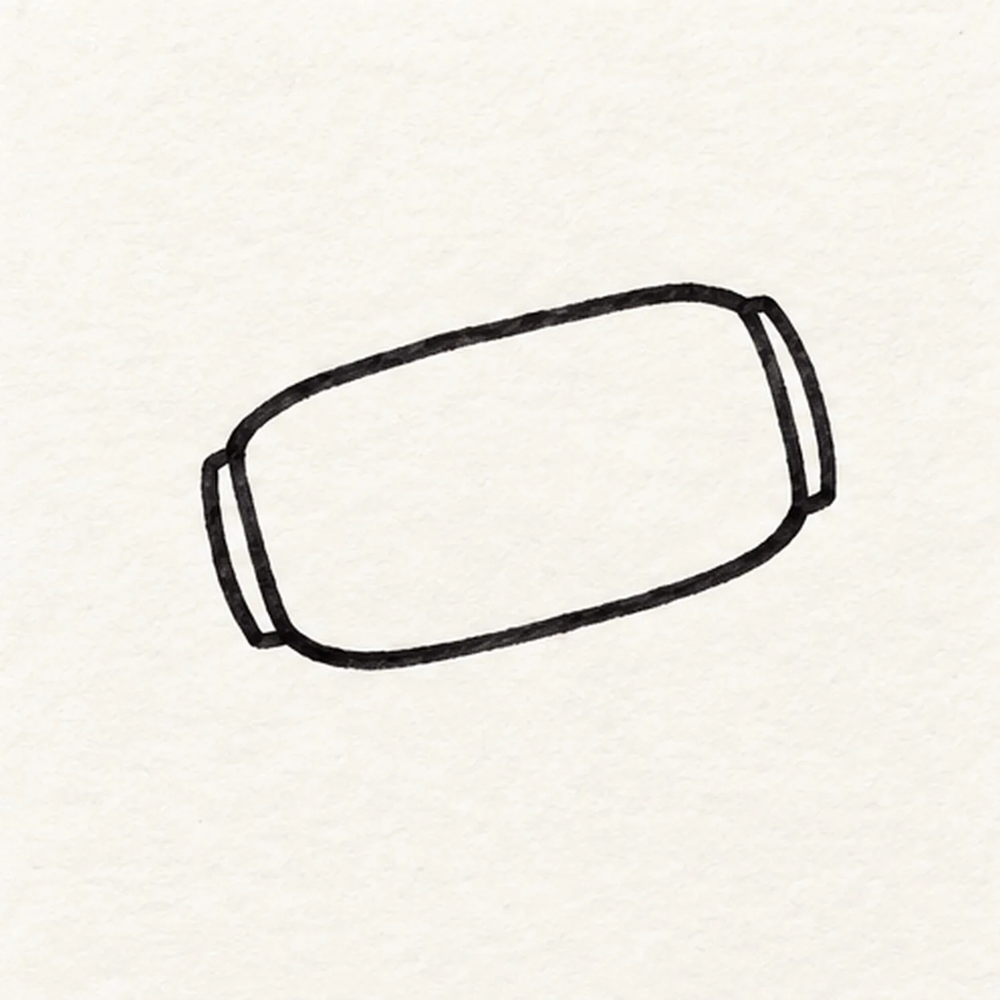
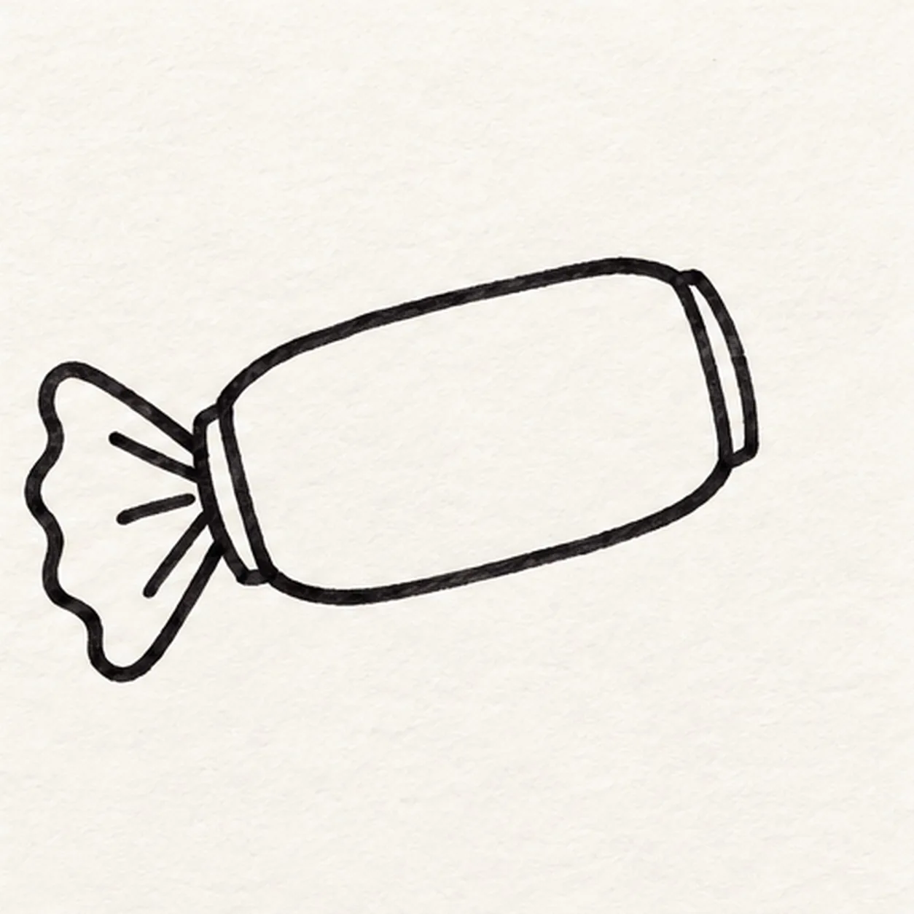
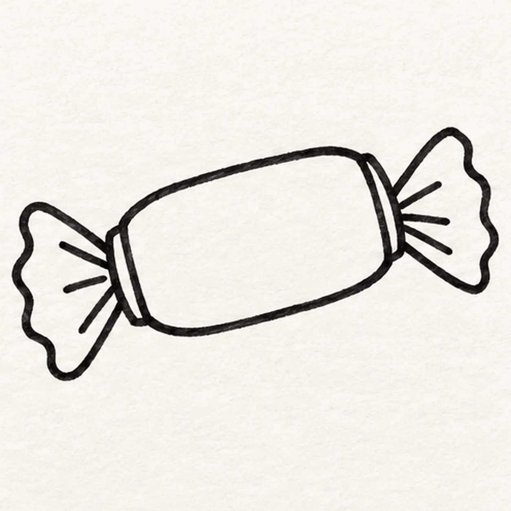
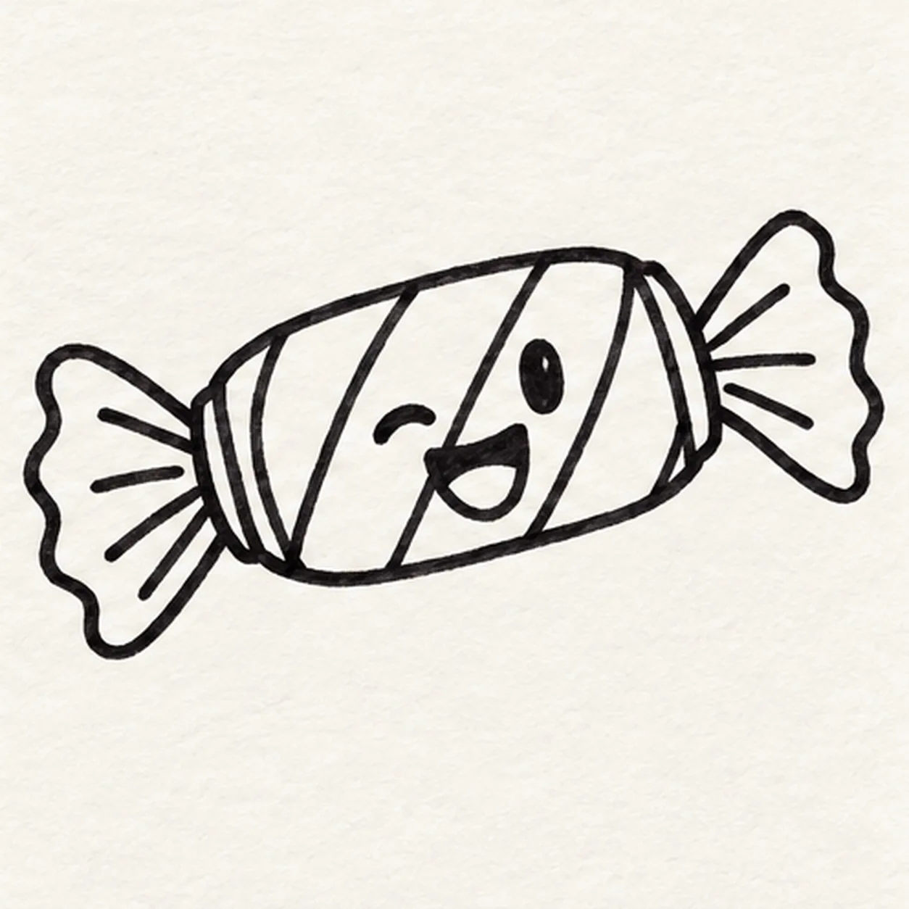

Felt-tip marker mode
Let's draw a wrapped candy
Treat this as one playful practice round: sketch the idea loosely, simplify the shapes, then commit with confident marker outlines and bright fills.
-
01

Draw the candy center
Draw a wide rounded candy center on a slight upward tilt. Close each short end with a narrow curved seam so the wrapper twists have clear attachment edges.
Marker tip: Keep the center broad enough for a face and five color bands.
-
02

Twist the left wrapper
Pinch the left end into a narrow neck, then spread its outer edge into a broad uneven fan. Pull short fold strokes from the neck into that fan, stopping before its edge.
Marker tip: The fold strokes stay inside the left fan.
-
03

Twist the right wrapper
Repeat the pinch at the right end and open a second uneven fan. Add short fold strokes from its neck, keeping both candy ends and the left wrapper in place.
Marker tip: Attach the right fan at the original end seam.
-
04

Stripe the candy and give it a wink
Divide the candy center into five diagonal bands, with narrower bands at the ends. In the open spaces draw one curved wink, one open oval eye, and a broad open grin.
Marker tip: Place the wink and open eye between the bands so both stay visible.
-
05

Fill the sweet color
Fill the left wrapper coral and the right wrapper teal. Color the five center bands coral, yellow, coral, yellow, coral from left to right, and darken the same face and fold lines with black felt tip while leaving small paper highlights inside existing areas.
Marker tip: Follow each band with directional marker strokes and leave some paper grain.